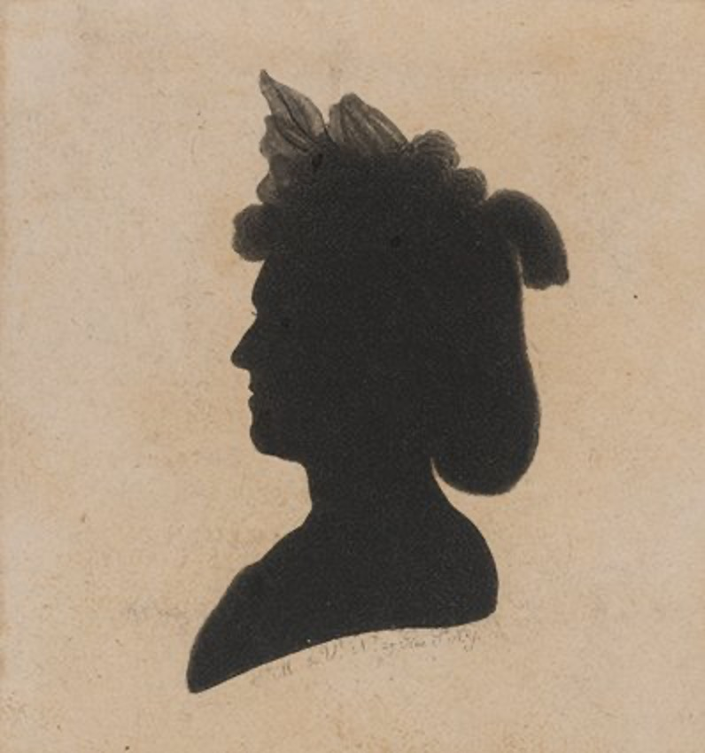

PROLOGUE
现象的初见
安杰洛·萨拉（Angelo Sala）是个自学成才的意大利医生。1614年，他随手记录了一个偶然发现：当硝酸银粉末暴露在阳光下时，它会像墨水一样变黑。
这是人类第一次记录光对银化合物的化学作用。
步入实验室
STEP 01
感光性的物理实证
1727年，德国阿尔特多夫大学的约翰·舒尔茨（Johann Heinrich Schulze）教授做了一个精巧的实验：
把硝酸银装进瓶子，瓶包黑纸只留镂空字母。
开始科学实证
进入光谱探索
STEP 02
光谱选择性与定影雏形
—— 请点击颜色 ——
1777年，瑞典药剂师卡尔·舍勒（Carl Wilhelm Scheele）发现，银盐对不同颜色的光反应截然不同：
紫光能在极短时间内让氯化银变黑，而红光则需要漫长的时间。他还观察到氨水可以溶解未曝光的银盐，
这实际上是摄影“定影”技术的最早雏形。
1782年，瑞士博物学家让·塞内比埃（Jean Senebier）用棱镜将阳光分解成光谱，精确测量了不同颜色光线对氯化银的作用时间：
这首次揭示了光谱对感光度的差异性影响。
返回对比
应用舍勒发现
STEP 03
卤族元素的进化
Iodine & Bromine
1811-1826年：
法国化学家贝尔纳·库尔图瓦（Bernard Courtois）与安托万·巴拉尔（Antoine Jérôme Balard）相继发现碘与溴。
这些元素将为摄影术提供高感光度。
继续探索
STEP 04
光化学成像的系统探索

1794年，在爱丁堡，化学家伊丽莎白·富尔哈默（Elizabeth Fulhame）进行了关键实验：
她尝试用光在布料上“绘制”图案，并系统记录了材料与反应过程。
她在《论燃烧》中描述的“光还原”现象，实际上已触及摄影化学的核心原理之一。
进入韦奇伍德实验
STEP 05
物影暂存的瓶颈
HISTORICAL ARCHIVE
1802年，托马斯·韦奇伍德（Thomas Wedgwood）开始系统实验：
将树叶、昆虫翅膀、蕾丝等半透明物体放在涂有硝酸银的皮革或纸张上，然后暴露在阳光下。
开始曝光